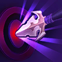
Starter
Tyrande
Accurate Mark
Gain Trueshot Aura, Mark of Mending, Huntress's Fury, and Ranger's Mark.
+4s Hunter's Mark Duration
◆Repeatable Quest: Basic Attacks against enemy Heroes grant 1 stack and increases Attack Damage by 0.4 per stack.
Retain 50% of Quest progress after winning the game.
All Talents
Gain all talents in a tier whenever you reach a non-Heroic talent tier.
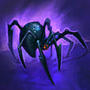
Starter
Nazeebo
Arachnophile
Gain Widowmakers, Hexed Crawlers, Spirit of Arachyr, and Spider Colony.
Passive: Summon 3 Corpse Spiders every 5 seconds.
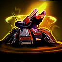
Starter
Sgt. Hammer
Artillery
Gain Advanced Artillery.
Advanced Artillery:
+25% Splash Radius
+15% Splash Damage
Basic Attacks while in Siege Mode have global range.
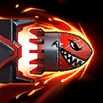
Starter
Sgt. Hammer
Big Guns
Gain Blunt Force Gun and Orbital BFG.
Blunt Force Gun:
+2 Charges
-60s Cooldown
-100 Mana Cost
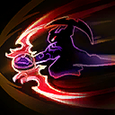
Starter
Illidan
Burning Blades
Gain Fiery Brand.
Dealing damage with Basic Attacks, Dive, or Sweeping Strike grants 1 stack of Burning Blades.
After 2.25 seconds, Burning Blades rapidly decays.
+0.5% Attack Speed per Burning Blades stacks.
Attack Speed Bonus caps at +800%.
Burning Blades decays 80 stacks per second.
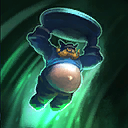
Starter
The Lost Vikings
Button Masher
Gain Viking Bribery, Spin To Win!, Norse Force, and Jump!.
-5s Spin To Win! Cooldown
-7.5s Norse Force Cooldown
-15s Jump! Cooldown
-15s Go Go Go! Cooldown
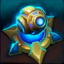
Starter
Probius
Cannon Rush
+2 Photon Cannon Charges
Photon Cannon replenishes all charges at the same time.
Photon Cannon's duration is paused while within a Pylon's Power Field.
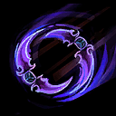
Starter
Illidan
Deep Dive
Gain Reflexive Block, Rapid Chase, Friend or Foe, and Marked for Death.
+5% Maximum Health Damage for Dive.
Dive gains unlimited range.
Elune's Ranger
Gain Ranger, Harsh Moonlight, Empower, and Commander of Sentinels.
+1 Sentinel Charge
-100% Sentinel Mana Cost
◆Repeatable Quest: Hitting enemy Heroes with Sentinel grants 1 stack and increases Sentinel's damage by 5% per stack.
Reward (20 Stacks): Sentinel pierces the first Hero hit.
Retain 25% of Quest progress after winning the game.
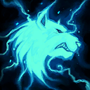
Starter
Thrall
Frostwolf's Fury
Gain Frostwolf Pack, Ancestral Wrath, Frostwolf's Grace, and Spirit Shield.
Basic Attacks grant 1 stack of Frostwolf Resilience.
Great Viking Hoard
Enemy Heroes drop 3 Regeneration Globes and enemy Structures drop 1 Regeneration Globe on death. These globes do not turn Neutral.
◆Repeatable Quest: Collect Regeneration Globes to grant 1 stack.
Reward:
+0.5% Attack Damage, Spell Power, and Maximum Health per stack.
+0.25% Movement Speed per stack.
+0.75% Go Go Go! Movement Speed per stack.
Retain 25% of Viking Hoard's Quest progress after winning the game.
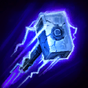
Starter
Muradin
Hammerer
Gain Perfect Storm and Sledgehammer.
+7% Maximum Health Damage for Storm Bolt against Heroes.
Retain 100% of Storm Bolt's Quest progress after winning the game.
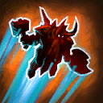
Starter
Muradin
Jumper
Gain Dwarf Block, Heavy Impact, Dwarf Launch, and Mountain King.
+100% Dwarf Toss Range and Radius
Become Unstoppable during Dwarf Toss.
◆Repeatable Quest: Hitting enemy Heroes with Dwarf Toss grants 1 stack and increases Dwarf Toss's damage by 10% per stack.
Reward (25 Stacks): -4s Dwarf Toss Cooldown
Retain 50% of Quest progress after winning the game.
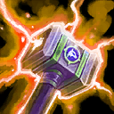
Starter
Thrall
Lightning Rod
Gain Nexus Blades, Elemental Assault, and Elemental Momentum.
Thrall's Basic Attack becomes ranged and ranged-only Boons become available.
+50% Feral Spirit Range
+50% Chain Lightning Cast Range
Ranged Thrall has 6 Attack Range.
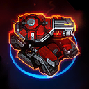
Starter
Sgt. Hammer
Machine Gunner
Tank Mode:
+1.5 Attack Range
+700% Base Attack Speed
-75% Base Attack Damage
Basic Attacks in Tank Mode fire 8 times per second.
Meteor Shower
Gain Elune's Gift.
Every Basic Attack fires a Lunar Flare at a random nearby enemy, prioritizing Heroes.
This effect has a 3.5 second cooldown.
Retain 100% of Lunar Flare's Quest progress after winning the game.
Missile Barrage
Gain Force Armor, Charged Blast, Seeker, Fireflies, and Mirrorball.
+2s Magic Missiles Cooldown
After the initial missiles, Magic Missiles fires a barage of 15 magic missiles over 1 second dealing 50% damage.
The additional magic missiles deal 25% damage to Structures and do not benefit from Seeker.
Orbing
Gain Triumvirate, Zei's Vengeance, and Arcane Orbit.
Arcane Orb fires 2 additional orbs in an arc.
Overwhelming Power
+20% Spell Power, Movement Speed, Attack Damage, and Attack Speed.
+50% Basic Ability Cooldown Recharge Rate
+10% Lifesteal
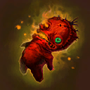
Starter
Nazeebo
Power Ritual
+50% Splash Attack Damage
Basic Attacks deal bonus damage equal to your Voodoo Ritual stacks.
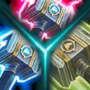
Starter
Thrall
Quests Galore
Gain Echo of the Elements, Crash Lightning, Maelstrom Weapon, Frostwolf Pack, and Thunderstorm.
Retain 50% of Quest progress on these Quests after winning the game.
Self Reliant
AI Teammates:
+25 Armor
+300% Health and Mana Regeneration
+33% Lifesteal

Starter
The Lost Vikings
Specialized Vikings
Gain Large and In Charge.
+40 Olaf Armor
-2s Olaf Charge Cooldown
+40% Baleog Attack Speed
+5.5 Erik Attack Range
Teleporter
Gain Aether Walker, Calamity, Illusionist, and Diamond Skin.
Calamity deals 50% damage to non-Heroes.
Teleport:
+100% Range
+2 Charges
True Unending Hatred
Gain Nexus Blades and Unending Hatred.
+25% Unending Hatred stacks from any source.
Retain 50% of Quest progress after winning the game.
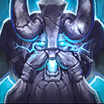
Starter
Muradin
Unstoppable Avatar
Gain Avatar, Unstoppable Force, Third Wind, and Stoneform.
Avatar is always active.
Basic Attacks deal bonus damage equal to 3% of your maximum Health.

Starter
Probius
Warp Split
Warp Rift splits into 2 Warp Rifts after detonation. These do not split further.
Enemies are pulled toward Warp Rift's center.
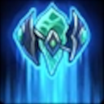
Starter
Probius
Warp Technology
Gain the ability to warp in Zealots for 5 Minerals, Stalkers for 10 Minerals, and Immortals for 30 Minerals near Pylons.
Start the game with 50 Minerals.
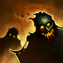
Starter
Nazeebo
Zombie Handler
Gain Dead Rush and Ring of Poison.
Zombies no longer lose Health over time.
Passive: When a nearby enemy Minion dies or is killed by you, it has a 50% chance to summon a Zombie.
Calamitous
+15% (+15% per stack) Calamity Damage
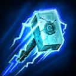
Common
Muradin
Cheap Hammer
-25 Storm Bolt Mana Cost
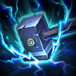
Common
Muradin
Clap Clap
+15% (+15% per stack) Thunder Clap Damage
Cryo Mine
+2.5s Spider Mines Slow Duration
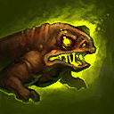
Common
Nazeebo
Deadly Toads
+15% (+15% per stack) Plague of Toads Damage
Debilitating Spiders
Corpse Spiders:
+15% Slow
+2s Slow Duration
Destruction
◆Quest: Destroying enemy Forts or Keeps grants 1 stack.
Reward (6 Stacks): +1 Common Boon
Reward (12 Stacks): +1 Uncommon Boon
Reward (24 Stacks): +1 Rare Boon
Retain 100% of Quest progress after winning the game.
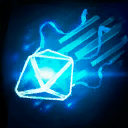
Common
Probius
Disruptor
+15% (+15% per stack) Disruption Pulse Damage
Durable Shields
+50 Physical Armor for allied melee Minions.
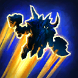
Common
Muradin
Dwarf Impact
+15% (+15% per stack) Dwarf Toss Damage
Efficient Spiders
-30 Corpse Spiders Mana Cost
Electrocution
+20% Thunder Clap Slow
Elune's Reach
+50% Light of Elune Range
Light of Elune heals for 25% more on distant targets.
Endurance
+8% (+8% per stack) Maximum Health for all allies.
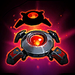
Common
Sgt. Hammer
Explosive Mine
Spider Mines:
+15% (+15% per stack) Damage
+5s (+5s per stack) Duration
Common
Probius
Explosive Rift
+15% (+15% per stack) Warp Rift Damage
Fast Feet
+8% (+8% per stack) Movement Speed for all allies.
Fast Uproot
-50% Zombie Wall Cast Time and Delay.
Firepower
+15% (+15% per stack) Photon Cannon Damage
Fodder
-50 Zombie Wall Mana Cost
Globe Collector
Regeneration Globe effects for all allies:
+5 (+5 per stack) Collection Range
+2.5s (+2.5s per stack) Duration
Healing Spell
Allied leader Minions heal nearby allied Minions for 1% of their maximum Health every second.
Hungry Zombies
Zombies and Zombie Wall:
+15% (+15% per stack) Damage
+25% (+25% per stack) Maximum Health
Hurtful Orbs
+15% (+15% per stack) Arcane Orb Damage
Improved Archery
Allied ranged Minions:
+2 Attack Range
+25% Attack Speed
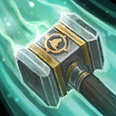
Common
Thrall
In a Rush
Windfury:
+10% (+10% per stack) Movement Speed
+0.5s (+0.5s per stack) Duration
Kill Contract
◆Quest: Hero Takedowns grant 1 stack. Progress is lost between rounds.
Reward (25 Stacks):
+1 Common Boon
+1 Uncommon Boon
Common
Probius
Lasting Rift
+6s Warp Rift Duration
Light Feet
-30 Dwarf Toss Mana Cost
Long Blades
+0.75 Attack Range
MacGuffin
-50% (-25% per stack) Objective Channel Time for all allies.
Mana Regenerator
+100% Mana Regeneration for AI Teammates.

Common
Nazeebo
Many Rituals
+40 (+20 per stack) Voodoo Ritual Stacks
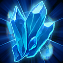
Common
Probius
Mineral Magnet
+10 Mineral Collection Range
Pacifism
◆Quest: Win a game without any personal Hero Takedowns and Assists.
Reward:
+1 Uncommon Boon
+1 Rare Boon
+1 Epic Boon
Path of the Assassin
+[dynamic] (+[dynamic] per stack) Attack Damage per level.
Path of the Warrior
+40 (+40 per stack) Maximum Health per level.
Path of the Wizard
+10 (+10 per stack) Maximum Mana per level.
+0.2 (+0.2 per stack) Mana Regeneration per level.
Power Bolt
+15% (+15% per stack) Storm Bolt Damage
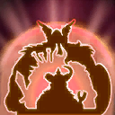
Common
The Lost Vikings
Power of Three
+7.5% (+7.5% per stack) Olaf Maximum Health
+5% (+5% per stack) Baleog Attack Damage and Attack Speed
+7 (+7 per stack) Erik Attack Damage+5% (+5% per stack) Erik Movement Speed
Powerful
+6% (+6% per stack) Attack Damage for all allies.
Powerful Missiles
+15% (+15% per stack) Magic Missiles Damage
Powerful Spiders
+15% (+15% per stack) Corpse Spiders Damage
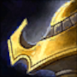
Common
Probius
Protoss Armor
+25% (+25% per stack) Maximum Health and Shields for Zealots, Stalkers, and Immortals.
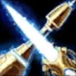
Common
Probius
Protoss Weapons
+15% (+15% per stack) Damage for Zealots, Stalkers, and Immortals.
Reinforced Walls
+20% (+20% per stack) Maximum Health for allied Structures.
Ring of Magic
+15% (+7.5% per stack) Ability Recharge Rate for allied Heroes.
Ring of Regeneration
Allied Heroes:
+12 (+8 per stack) Health Regeneration
+250 (+100 per stack) Maximum Health
Common
Nazeebo
Ritual of Boons
◆Quest: Gaining Voodoo Ritual stacks grants 1 stack. Progress is lost between rounds.
Reward (250 Stacks):
+1 Uncommon Boon
+1 Rare Boon
Spellcasting
+6% (+6% per stack) Spell Power for all allies.
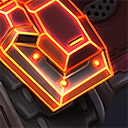
Uncommon
Sgt. Hammer
Advanced Plating
+2s Neosteel Plating Duration
Amplified Healing
+25% (+15% per stack) Healing Received
Backup Power
+5s (+5s per stack) Photon Cannon Duration
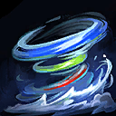
Uncommon
The Lost Vikings
Big Spin
+50% (+50% per stack) Spin To Win! Range
Big Star
+20% Lunar Flare Radius
Uncommon
Probius
Black Hole
+10% (+10% per stack) Warp Rift Cast Range and Radius.
Bye Bye!
-4.5s Hearthstone Channel Time for all allies.
Convenient Portals
Creates a permanent Portal between the top lane and the bottom lane, only usable by your Team.

Uncommon
Demolitionist
+25% (+25% per stack) Damage against Structures for all allied Heroes.
Drilling Claws
-50% Spider Mines Arming Time
Enhanced Targeting
+2 (+2 per stack) Photon Cannon Attack Range
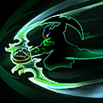
Uncommon
Illidan
Extended Assault
+3s Sweeping Strike Damage Duration
Farshot
+15% (+15% per stack) Magic Missiles Range
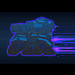
Uncommon
Sgt. Hammer
Fuel Reserves
+4s Thrusters Duration

Uncommon
Gathering Power
+15% (+15% per stack) Spell Power
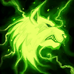
Uncommon
Thrall
Healthy Frostwolf
+25% (+25% per stack) Frostwolf Resilience Healing
Heavy Hammer
+0.25s Storm Bolt Stun Duration
Jar of Frogs
+2 Plague of Toads Charges

Uncommon
The Lost Vikings
Let's Go!
+3s (+3s per stack) Go Go Go! Duration
Long Pulse
+15% (+15% per stack) Disruption Pulse Range
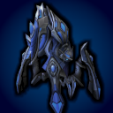
Uncommon
Probius
Long Range Disruptors
+2 Stalker Attack Range
Many Zombies
-4s Zombie Wall Cooldown
Minion Killer
+25% (+25% per stack) Damage against Minions, Mercenaries, Monsters, Summons for all allied Heroes.
Nexus Frenzy
+15% (+7% per stack) Attack Speed
Nexus Range
+1.1 (+0.5 per stack) Attack Range
Nimble Legs
+25% Corpse Spiders Movement Speed
Optimized Ordnance
+25% Photon Cannon Attack Speed
Owling
-3s (+3s per stack) Sentinel Cooldown
Pinned Down
+0.25s Feral Spirit Root Duration
Quick Mount
+40% Mount Speed for all allies.
Quick Transformation
Dragonqueen:
-130s Starting Cooldown
-0.75s Cast Time
Rapid Disruptors
+25% Stalker Attack Speed
Reinforced Power Suit
+50 Zealot Physical Armor
Repair Mines
+75% Spider Mines Lifesteal
Searing Attacks
20% (+15% per stack) Attack Damage
Strangling Vines
Entangling Roots affects non-Heroic enemies.
Stunning Light
+0.25s Lunar Flare Stun Duration
Superiority
+30 (+15 per stack) Armor against non-Heroes for all allies.
Turbo
Gain Turbo Charged.
Worker Rush:
+10% (+10% per stack) Movement Speed
+1s (+1s per stack) Duration
Uncommon
The Lost Vikings
Viking Barrier
Norse Force grants a Shield equal to 10% to 30% of the Viking's maximum Health, increasing in strength for each Viking alive.
+2s Norse Force Duration
Warp Conduit
-4s (+4s per stack) Warp in Pylon Cooldown
Wide Pulse
+50% Disruption Pulse Width
Active Pathogen
Healing Pathogen can be used on and spreads to allied Minions, Mercenaries, and Summons.
Ancestral Reach
+3 Chain Heal Bounces on non-Heroes.
Chain Heal can be used on and bounces to allied Mercenaries.
Auto MULE
Automatically drop down a MULE near a random damaged allied Structure that repairs 10% of the Structure's maximum Health per second.
This effect has a cooldown of 60 (-20s per stack) seconds.
Beat Drop
Gain Boombox.
+4 Maximum Boombox
Multiple Boombox's effects do not stack.
Bestow Despair
Bestow Hope can be used on enemy Heroes.
Blaster
Concussive Blast:
+1 Charge
+50% Damage
Breeze
Windfury:
-3s Cooldown
-20 Mana Cost
Bribery
Automatically bribe a neutral Mercenary camp to your side every 300 (-60s per stack) seconds. Camps taken this way respawn 50% faster. Does not work on Bosses.

Rare
BUDDY
A friendly Drone follows you around, healing for 154 Health every 3 (-0.25s per stack) seconds.
BUDDY shoots a missile every 4 (-1s per stack) seconds at the nearest enemy, dealing 142 damage in the area.
Burning Light
Holy Light and Flash of Light can be used on enemies. Holy Light deals [dynamic] damage to enemies and Flash of Heal deals [dynamic] damage to enemies.
Capacitor
+10 (+10 per stack) Maximum Energy
Cellular Reactor
Gain Cellular Reactor.
+20 (+20 per stack) Maximum Energy
+1 (+1 per stack) Energy Regeneration
Energy Regeneration only applies after not channeling Healing Beam for 2 seconds.
Cerberus Mine
+50% Spider Mines Trigger and Explosion Range
Circle of Scorn
Breath of Heaven heals allied Minions, Mercenaries, and Summons, and deals 295 damage to enemies.
Damage is affected by Echo of Heaven and Heavenly Zeal.
Crushing Sunder
Gain Worldbreaker.
+1.5s Sundering Stun Duration
Curse of the Red
Gain Blessing of the Red.
-20s Blessing of the Red Cooldown
Using Blessing of the Red on an enemy Hero permanently reduces their maximum Health by 500.
Debilitating Rounds
While in Tank Mode, Basic Attacks Slow by 1% for 4 seconds, up to 50%.
Deep Well
Gain Lightwell.
Lightwell periodically deals 50 damage to nearby enemies and its cooldown is reduced by 1 second each time Lightwell deals damage.
Lightwell only fades after healing or dealing damage 150 times or when recast and heals allied Minions, Mercenaries, and Summons.
Lightwell cannot target the same enemy more than once every 0.875 seconds.
Dragon Stamina
+25 (+25 per stack) Maximum Energy
Earth Shatterer
-50s Earthquake Cooldown
Earthquake gains unlimited range.
Efficient Morph
Metamorphosis:
+100% Maximum Health Bonus
-40s Cooldown
Enervate
Innervate can be used on enemy Heroes to Silence for 3 seconds and steal 20% of maximum Mana, dealing damage for the same amount.
Cannot be used on Heroes that do not use Mana.
Extended Magazine
+10 (+10 per stack) Maximum Ammo
Fast Puncher
Haymaker:
+1 Charge
-20s Cooldown
First Aid
+25% (+25% per stack) Maximum Health
+1% (+0.5% per stack) Maximum Health Regeneration
Giant Killer
+2% (+1% per stack) Maximum Health Damage from Basic Attacks against Heroes.
Globe Huffer
Spawns a Regeneration Globe near a random allied Hero every 12 (-4s per stack) seconds, with you twice as likely to be chosen.
Passive: Blue Regeneration Globes take 100% longer to turn Neutral.
Glyph of Crittermorph
Polymorph lasts for 60 seconds when used on non-Heroic enemies.
Good Brew, Bad Brew
Healing Brew throws 2 additional brews, one to heal allied Minions, Mercenaries, and Summons, and the other to deal 210 damage to enemies.
Damage is affected by The Good Stuff and Pick Me Up.
Greater Healing Totem
Gain Healing Totem.
Healing Totem:
+20s Duration
+700% Maximum Health
Healing Totem deals damage equal to 2% of maximum Health to enemies and heals allied Minions, Mercenaries, and Summons.
Greater Phase Shift
Phase Shift can be used on allied Minions, Mercenaries, and Summons.
Phase Shift can be used on enemies to deal damage equal to 25% of their maximum Health.
Hyper Shift increases Phase Shift's damage.
Hard Impact
Dive Stuns enemies for 0.25 seconds.
Hardened Shield
While the Immortal has Shields remaining, incoming damage that would deal more than 45 damage have the damage reduced to 45.
Does not affect Spell Damage.
Holy Shock
Gain Holy Shock.
Increases Holy Shock's damage to [dynamic] and it no longer shared a cooldown with Holy Light.
Improved Archon
Gain Temporal Flux.
Disintegrate:
-19.5s Cooldown
-100% Mana Cost
Khaydarin Upgrade
+100% Photon Cannon Splash Damage
Knock Out
+1s Sleep Dart Duration
Enemies cannot be woken up from Sleep Dart with damage for 2 seconds.
Large Brew
+25 (+25 per stack) Maximum Brew
Lasting Poison
+2s Ring of Poison Duration
Light Tank
Tank Mode:
+1.5 Attack Range
+20% Movement Speed
Movement Speed cannot be reduced below 120% in Tank Mode.
Mad
+20 (+20 per stack) Maximum Rage
Marathon
Gain Eager Adventurer, Safety Sprint, and Shake It Off.
+2.5s Fast Feet Duration
Mercenary Lord
Allied Mercenaries:
+25% (+25% per stack) Maximum Health
+50% (+50% per stack) Damage
Mystic Ally
Radiant Dash leaves behind either a Spirit Ally, an Earth Ally, or an Air Ally.
Identical Ally effects do not stack.
Operational Efficiency
-50% Mana Cost on all Abilities.
Overflowing Light
Light of Elune can be used on allied Minions, Mercenaries, and Summons.
Healing also applies in an area when Moonlight is picked.
Passive Income
Gain 1 (+1 per stack) Mineral every 8 seconds.
Path of the Fighter
Path of the Assassin, Path of the Warrior, and Path of the Wizard count as being 4 levels higher.
Path of the Assassin and Path of the Warrior apply to AI Teammates.
Pop Track
Crossfade and Amp It Up apply to allied Minions, Mercenaries, and Summons.
Potion of Poison
Healing Potions deal 285 damage to enemies.
Lesser Healing Potions deal 250 damage to enemies.
Damage is affected by Rejuvenation Potion, Super Healing Potion, Mega Healing Potion, and Potion of Revival.
Potion Seller
Gain Potion of Revival.
Healing Potions and Lesser Healing Potions heal allied Minions, Mercenaries, and Summons.
Prayer of Death
Gain Desperate Prayer.
Desperate Prayer:
-15s Cooldown
-1s Kneel Duration
Desperate Prayer deals 375 damage when used on enemies.
Precision Lava Strike
Gain Advanced Lava Strike.
Napalm Strike gains unlimited range.
Private Medivac
A Medivac arrives in the Hall of Storms and remains there for 10 seconds when you respawn after death.
Immediately departs after you enter the Medivac to your last death location.
This effect has a cooldown of 60 seconds.
Promote
Allied Minions:
+15% (+15% per stack) Maximum Health
+50% (+25% per stack) Damage against non-Heroes.
-25% Damage Taken from non-Heroes.
Pylon Expansion
+1 (+1 per stack) Maximum Pylons
Quick Lightning
-2s Chain Lightning Cooldown
Quick Scare
Ravenous Spirit:
+2s Duration
+15% Movement Speed
Ragnarok's Raid
Gain Ragnarok 'n' Roll.
-2s Mortar Cooldown
Rapid Fire
-3s Delay for Photon Cannons to reach full Attack Speed bonus.
Rapid Missiles
-1s Magic Missiles Cooldown
Replay
-50s Play Again! Cooldown

Rare
Revealing Touch
Basic Attacks reveal a small area around the target for 3 seconds.
Scattered Blows
Gain Transcendence.
Transcendence heals the lowest Health nearby allied Minion, Mercenary, or Summon, and deals 104 damage to the lowest Health nearby enemy in addition to healing allied Heroes.
Scrap Yard
+4 (+4 per stack) Maximum Scrap
Searing Lash
+100% Searing Lash stacks from any source.
Retain 25% of Searing Lash's Quest progress after winning the game.
Shredder Rounds
While in Tank Mode, Basic Attacks reduce Physical Armor by 1 for 4 seconds, stacking up to 50.
Small Dosage
Healing Dart and Biotic Grenade heal allied Minions, Mercenaries, and Summons.
Healing Dart pierces all non-Heroes while Aim Down Sights is active.
Solarite Powered
+400 Maximum Mana
+25 Mana Regeneration while outside a Pylon's Power Field.
Sonya's Fury
+25 (+25 per stack) Maximum Fury
Spider Swarm
+1 (+1 per stack) Summoned Corpse Spiders
Stabilizer Medpacks
-6 Healing Beam Energy Cost when used on non-Heroes.
Healing Beam can be used on allied Mercenaries and Summons.
Star Rain
-40s Starfall Cooldown
Starfall gains unlimited range.
Surprise Hunt
The Hunt:
+1s Duration
-30s Cooldown
Tantrum
Gargantuan:
-3s Stomp Cooldown
+25% Stomp Damage
Trojan Mines
While in Tank Mode, every 8th Basic Attack against the same enemy summons a Spider Mine.
Unexpected Inquisition
Clemency and Inquisition no longer share a cooldown.
Clemency can be used on allied Minions, Mercenaries, and Summons.
Inquisition can be used on non-Heroic enemies.
Very Heavy Impact
Dwarf Toss Stuns enemies for 0.75 seconds.
Vigor
Gain Vigor.
+25 (+25 per stack) Maximum Energy
Wave of Doom
Gain Repulsion.
Wave of Force reduces the Spell Armor of enemy Heroes by 50 for 0.5 seconds.
Wings of Hope
Gain Angelic Flight.
Angelic Flight:
-20s Cooldown
-1s Cast Time
Angelic Flight gains unlimited range.
Yoink!
-30s Leap of Faith Cooldown
Leap of Faith can be used on non-Structure enemies.
Arcane Loop
Using a Basic Ability reduces the cooldown of your other Basic Abilities by 0.75 seconds.
Ardent Zeal
Allies with Zeal are healed for 25% of the damage Whitemane deals to non-Heroes.
Bed Time Story
Gain Stay Awhile and Listen and Respect the Elderly.
Stay Awhile and Listen:
+25% Range
+8s Sleep Duration after the Channel.
Stay Awhile and Listen also affects non-Heroic, non-Structure enemies.
Minion damage does not wake up Minions and Mercenaries.

Epic
Belligerent Gladiator
+2s Gladiator's Medallion Duration
Beyblade
Cooldown: 30 seconds
Activate to continuously cast Spin to Win! that deals 50% damage for 4 seconds.
Blessing of the Dragons
AI Teammates:
+500 (+500 per stack) Maximum Health
+20% (+20% per stack) Movement Speed
+35% (+35% per stack) Basic Ability Cooldown Recharge Rate
Bursting Light
-2s Ray of Heaven Cooldown
Calm Plea
Desperate Plea can be used on allied Minions, Mercenaries, and Summons.
+52s Zeal Duration on non-Heroic targets.
-3s Desperation Duration when Desperate Plea is used on non-Heroic targets.
Using Desperate Plea on a non-Heroic target refunds 30 Mana.
Cenarius's Spite
Regrowth deals 380 damage over 20 seconds when used on enemies.
Enemies with an active Regrowth take 130 damage for each enemy Hero hit by Moonfire.
Damage is affected by Ysera's Gift, Lifebloom, and Moonlit Harmony.
Chain Beam
Healing Beam can chain to 2 additional targets at no additional Energy cost.
Chain Split
Chain Heal:
-40 Mana Cost
-4s Cooldown
+50% Bounce and Cast Range
Chain Heal can be used on enemies to deal 260 damage.
Chain Heal splits into an additional wave that bounces 2 times to nearby enemies.
Epic
Probius
Condenser
Warp Rift:
+1 Charge
-1s Cooldown
Deadly Mark
+10 Hunter's Mark Armor Reduction
Deep Pockets
Bribery will work on Bosses, Sentinels, and Support camps, prioritizing them over regular Camps.
+50% Bribery Cooldown Recharge Rate
Dual Hammer
+1 Storm Bolt Charge
Efficient Warp
Zealots, Stalkers, and Immortals:
-20% Mineral Cost
-50% Cooldown
Electric Shock
Chain Lightning Stuns enemies hit for 0.25 seconds.
Elune's Grace
+1 Light of Elune Charge
Elune's Wrath
Light of Elune can be used on enemies to deal 270 damage.
Damage is affected by Everlasting Light.
Damage also applies in an area when Moonlight is picked.
Emergency Measure
On fatal damage, AI teammates gain a Shield equal to 50% of Maximum Health for 4 seconds.
This effect has a 60 second cooldown per Hero.
Experienced
+15% Experience Gain for all allies.
Extra Mines
+2 Summoned Spider Mines
Faerie Mist
-2s Soothing Mist Passive Cooldown
Soothing Mist heals allied Minions, Mercenaries, and Summons, and deals 110 damage to enemies.
Critical Mist also deals and increases damage.
Fiery Olaf
Gain Hunka' Burning Olaf.
-0.5s Hunka' Burning Olaf Damage Cooldown
Fists of Thunder
Gain Blazing Fists and Way of the Hundred Fists.
Deadly Reach:
-35 Mana Cost
+50% Attack Speed
+50% Attack Range
Flyby Attack
Sentinel pierces and deals 50% damage to non-Heroic enemies.
Friendly Reinforcements
+1 (+1 per stack) allied Minion per Wave.
43% chance to spawn as a ranged Minion.
43% chance to spawn as a melee Minion.
14% chance to spawn as a leader Minion.
Additional Minions do not provide XP.
Epic
Gladiator's Medallion
Cooldown: 60 seconds (-20s per stack)
Activate to become Unstoppable for 2 seconds.
Growing Colony
+2 Summoned Corpse Spiders from Arachnophile's passive.
Hex All
Hexed Crawlers triggers on non-Heroic enemies.

Epic
Anduin
Holy Light For All
Flash Heal deals 280 damage when used on enemies. Flash Heal and Divine Star heal allied Minions, Mercenaries, and Summons.
Pursued By Grace heals the lowest Health nearby allied Minion, Mercenary, or Summon and deals 32 damage to the lowest Health nearby enemy in addition to healing allied Heroes.
Damage is affected by Evenhanded Blessings, Push Forward!, Renew, Enchanted Boots - Lion's Speed, and Inner Focus.
Holy Smite
Desperate Plea can be used on enemies to deal 140 damage and apply Zeal for 8 seconds.
Enemies with Zeal are damaged for 100% of the damage Whitemane deals to Heroes.
Damage is affected by Ardent Zeal, Pity the Frail, Martyrdom, and Radiance.

Epic
Sgt. Hammer
Hover Tank
Gain Hover Siege Mode.
+25% Movement Speed in Siege Mode.
Infestation
Healing Pathogen can be used on and spreads to enemies, dealing 222 damage over 4.5 seconds.
Bio-Kill Switch deals 435 damage to enemies affected by Healing Pathogen.
Damage is affected by Vigorous Reuptake, Superstrain, Universal Carrier, and Top Off.
Khalai Ingenuity
Warp in Pylon and Photon Cannon gain unlimited cast range and warp in instantly.
Loot Box
+2 Common Boons with a chance for higher rarity Boons.
Lurking Deep
Gain Growing Infestation and It Hungers.
Lurking Arm gains unlimited range and Growing Infestation no longer limits the Channel duration.
Mechanical Expert
Gain Mechanical Know-how.
Mechanical Know-how:
+2s Shield Duration
+5s Damage Duration
Mega Healing Potion
Gain Super Healing Potion.
Super Healing Potions continue to grow in power every 2 seconds, healing for 40% more each time. Stacks up to a maximum of 400% increased healing.
Stacks additively with Super Healing Potion's modifier.
The potion's search radius expands as the potion grows, up to a maximum radius of 2.
Moonlight
Light of Elune heals allied Heroes near the initial target.
Moonlight searches for allies in a radius of 2.5.
Need More Mana!
Takedowns restore Mana equal to 30% of Li-Ming's maximum Mana.

Epic
Lt. Morales
Neurotoxin Beam
Healing Beam can be used on enemies, dealing 172 damage per second.
Damage is affected by Extended Care and First Responder.
Nimble
+10% (+10% per stack) Dodge Chance against non-Structures.
+30% (+30% per stack) Dodge Chance against Structures.
Take no damage when dodging an attack or spell.
Pandaria's Mistweaver
Gain Mistweaver.
+1s Mistweaver Cooldown Reduction from Basic Attacks and Cloud Serpent attacks.
Mistweaver heals allied Minions, Mercenaries, and Summons, and deals 149 damage to enemies.
Physical Armor
+15 (+10 per stack) Physical Armor

Epic
Physical Leech
+10% (+10% per stack) Physical Lifesteal
Piercing Missiles
+25% Missile Barrage Base Damage against Structures.
Plasma Shields
Gain Shield Capacitor.
+40% Maximum Health Shield for Shield Capacitor.
Shield Capacitor applies to Photon Cannons and Pylons.
Poison Dart
Healing Dart deals 195 damage when used on enemies.
Healing Dart pierces all enemies while Aim Down Sights is active.
Sharpshooter and Concentrated Doses increase damage.
Polymorphic
+0.5s Polymorph Duration
Polymorph a nearby enemy every 7 seconds, prioritizing Heroes.
Polymorphic searches for enemies in a radius of 7.
Rampant Growth
Regrowth can be used on allied Minions, Mercenaries, and Summons.
When using Regrowth, it also applies Regrowth to all nearby allies for 50% normal duration.
Rampant Growth searches for targets in a radius of 3.
Rampant Growth also affects enemies when Cenarius's Spite is picked.
Resurgence of the Storm
Upon dying, revive back at your Altar after 5 seconds. This effect has a 300 (-60s per stack) second cooldown.
Resurrect All
Gain Resurrect and Light Speed.
Resurrect gains unlimited range.
Casting Resurrect on yourself or on an ally resurrects all dead allied Heroes.
Retribution
+12s Eternal Vanguard Duration
Divine Shield and Divine Storm can be used in spirit form.
Gain Light of Dawn and Hammer of Wrath abilities while in spirit form, equivalent to Holy Radiance and Hammer of Justice with 4 second cooldowns.
Eternal Vanguard can be cancelled early after 8 seconds.
Light of Dawn and Hammer of Wrath inherit Holy Radiance and Hammer of Justice talents.
Reverse Amp
Gain Reverse Amp.
Increases Reverse Amp's damage to 112 damage per second and it deals damage to non-Heroic enemies.
Reverse Amp Slows and deals damage without Amp It Up. During Amp It Up, Reverse Amp's damage is increased by 100% and its Slow by 20%.
Reverse Amp also applies to Boombox.
Rubber Bullets
While in Tank Mode, every 8th Basic Attack against the same enemy Stuns them for 0.25 seconds.
Selfless Healer
Holy Light and can be used on allied Minions, Mercenaries, and Summons. Holy Radiance heals allied Mercenaries and Summons.
Holy Light refunds 40 Mana and its cooldown is reduced by 6 seconds when used on non-Heroes.
Devotion grants Armor to allied non-Heroes.
Spell Armor
+15 (+10 per stack) Spell Armor
Spell Leech
+10% (+10% per stack) Spell Lifesteal
Storm Armor
Bathe yourself in electrical energy, shocking a random nearby enemy every second for 147 damage, prioritizing enemy Heroes.
Storm Shield
+25% (+25% per stack) Maximum Health Shield
Strength
+25% (+25% per stack) Damage
The Dragon Queen
Gift of Life, Breath of Life, Abundance, and Preservation heal allied Minions, Mercenaries, and Summons.
Gift of Life can be used on enemies to deal damage equal to 150% of sacrificed Health and Breath of Life can be used on enemies to deal damage equal to 20% of Alexstrasza's current Health.
Abundance deals damage to enemies equal to 20% of their maximum Health and Preservation deals damage to enemies equal to 30% of their maximum Health.
Circle of Life increases Abundance's damage.
Thundering Smash
Thunder Clap:
+1 Charge
-4s Cooldown
-20 Mana Cost
Touch of Power
Every 3rd Basic Attack against the same enemy Hero grants 2 stacks of Voodoo Ritual.
True Calamity
+25% Calamity Base Damage against non-Heroes.
Unchained
Gain Blades of Azzinoth.
+1 Sweeping Strike Charge
Undead Army
+4 Uprooted Zombies from Dead Rush.
Unstoppable Dive
Dive grants Unstoppable for the duration.
ZAP!
Basic Attacks deal 1000% increased damage and Slow by 90% for 4 seconds.
Has a cooldown of 10 seconds per target.
Ancestral Curse
Gain Ancestral Healing and Farseer's Blessing.
Ancestral Healing can be used on enemy Heroes to deal 1180 damage. Enemies nearby take 590 damage.
Ancient Blessings
Basic Attacks deal an additional 62 damage in an area and heal for 90 for each Hero hit.
This effect can only occur every 0.5 seconds.
Army of BUDDYs
+1 (+1 per stack) BUDDY
+1 BUDDY for AI Teammates.
-15% Base Damage and Healing for all BUDDYs.
Bloodlust
+20% (+20% per stack) Attack Speed
+17.5% (+17.5% per stack) Movement Speed
+15% (+15% per stack) Physical Lifesteal
Cleaver
+100% Splash Attack Damage
Basic Attacks splash in a radius of 2.5.
Splash does not trigger any Basic Attack effects.
Critical Healing
Frostwolf Resilience has a 50% chance to grant 1 additional stack.
Critical Mass
Getting a Takedown will refresh the cooldown on all of your Abilities.
Critical Power
Gain Tal Rasha's Elements.
◆Repeatable Quest: Takedowns grant 1 stack and increase Spell Power by 1.5% per stack.
Retain 50% of Quest progress after winning the game.
Death-Binder
Gain Life-Binder and Ritual of Life.
Life-Binder deals 1440 damage over 6 seconds when used on enemies.
Life-Binder's Health percentage effect does not apply on enemies.
Diseased Toads
Toads have a 50% chance to summon a Corpse Spider on death.
Diseased Zombies
Zombies have a 50% chance to summon a Corpse Spider on death.
Dreamstate
Gain Tranquility and Serenity.
Tranquility:
-50 Mana Cost
+3s Cooldown Reduction from hitting enemy Heroes with Moonfire.
Tranquility deals 80 damage per second to enemies and heals allied Minions, Mercenaries, and Summons.
Serenity's bonus healing also increases damage.
Ethereal Blink
Gain Blink Heal and Invisible Friends.
Blink Heal:
+3 Charges
-6s Cooldown
-1.5s Cooldown between Charges.
-30 Mana Cost
+50% Range
Blink Heal heals allied Minions, Mercenaries, and Summons, and can be used on enemies to deal 200 damage.
Experience Hoarder
Carry over 20% of your Experience after winning the game.
Exploding Palm
Gain Divine Palm and Peaceful Repose.
Divine Palm deals 1200 damage over 4 seconds when used on enemy Heroes.
When an enemy Hero dies while affected by Exploding Palm's damage over time, they explode and deal 1200 damage to all nearby enemies.
Explosion effect searches for enemies in a radius of 7.
Explosive Shells
+100% Splash Attack Damage while in Tank Mode.
Gamma Ray Burst
Gain Searing Light and Reservoir of Hope.
Ray of Heaven deals damage to non-Heroes and heals allied Minions, Mercenaries, and Summons.
Retain 25% of Reservoir of Hope's Quest progress after winning the game.
Legendary
Nazeebo
Great Ritual
Gain Vile Infection.
+100% Voodoo Ritual stacks from any source.
High-Grade Stimpacks
Gain Stim Drone and Hyperactivity.
+75% Stim Drone Attack Speed bonus.
Casting Stim Drone grants Lt. Morales her own Stim Drone.
Holy Word: Sanctify
Gain Holy Word: Salvation and Light of Stormwind.
-35 Holy Word: Salvation Mana Cost
Holy Word: Salvation heals and grants Invulnerable to allied Minions, Mercenaries, and Summons.
Holy Word: Salvation deals damage to enemies for up to 30% of their maximum Health.
Jug of 1,000,000,000 Cups
Gain Jug of 1,000 Cups and Jug of 1,000,000 Cups.
Jug of 1,000 Cups:
-60 Mana Cost
-1.5s Cooldown every 0.25 seconds while casting it.
Every 0.25 seconds, Jug of 1,000 Cups throws 5 brews to heal allied Minions, Mercenaries, and Summons, and 5 brews to deal 75 damage to enemies.
Legally Blind
Gain immunity to Blind and your vision range cannot be reduced.
Legendary Gems
Gain Sapphire, Ruby, Emerald, and Perfect Gems.
+10% Slow for Sapphire.
+50s Lesser Healing Potion Duration for Ruby.
-25% Healing Received for Emerald.
Sapphire, Ruby, and Emerald apply simultaneously to every Horadric Cube.
Lightning Ritual
+0.3% Attack Speed per Voodoo Ritual stack.
Current Total: +[dynamic]% Attack Speed
Lunar Shower
Lunar Flare triggers a second time 1.75 seconds later.
Nano Boost
+15% (+15% per stack) Spell Power
+75% (+75% per stack) Basic Ability Cooldown Recharge Rate
+2 (+2 per stack) Mana Regeneration
Never Ending Swarm
+50% Zombie Spawn Chance for Zombie Handler.
Zombie Handler triggers on allied Minions.
Pulsar
Gain Echo Pulse, Particle Accelerator, and Shoot 'Em Up.
-0.75s Echo Pulse Delay
+1.5% Shoot 'Em Up Maximum Health Damage
Particle Accelerator triggers on every Warp Rift.
RAGE!
Gain Bronzebeard Rage.
Bronzebeard Rage:
+200% Radius
-0.5s Damage Cooldown
Rapid Actuators
Gain Ultra Capacitors.
-1.75s Siege Mode Cooldown
Enter Siege Mode and Tank Mode near instantly.
Second Wind
On fatal damage, become Protected for 4 seconds.
This effect has a cooldown of 300 seconds.
Self Infusion
Gain Nano Boost and Nano Infusion.
-40s Nano Boost Cooldown
Casting Nano Boost grants Ana her own Nano Boost.
Shadowstalker
Gain Shadowstalk and Eyes of the Huntress.
-45s Shadowstalk Cooldown
Shadowstalk grants Unrevealable for 4 seconds and allied Minions, Mercenaries, and Summons are affected by Shadowstalk's healing over time.
Passive: Gain Stealth when out of combat for 3 seconds.
Shared Power
AI teammates's stats scale with the difficulty.
Current stats scaling: 4%
Shield Break
Gain Divine Shield and Bulwark of Light.
Divine Shield:
-40 Mana Cost
-40s Cooldown
Divine Shield can be used on enemy Heroes to deal 900 damage to Shields, reduce Armor by 75, and Slow by 20% for 4 seconds.
Bulwark of Light also applies Shield Break to nearby enemies.

Legendary
Slivan
Summons Slivan the Eternal Mother on your Team at the start of every game.
Stable Light
Gain Guiding Light.
+9 Maximum Guiding Light targets.
+15 Armor on Zeal's activation.
Guiding Light is now permanent and will no longer be removed on death.
Guiding Light can be used on enemy Heroes when Holy Smite is picked.
Talk to the Hand
Gain High Five and Mixing Fire.
High Five:
-70% Mana Cost
-30% Cooldown
High Five can be used on allied Minions, Mercenaries, Summons, and on non-Heroic enemies.
Mana cost and cooldown reduction stack additively with Mixing Fire's Mana cost and cooldown reduction.
Legendary
The Lost Vikings
The Trilogy!
Gain The Sequel!.
+30% The Sequel! Death Timer Reduction
Toad Master
Gain Pandemic, Toads of Hugeness, and Guardian Toads.
+2 Summoned Toads when Pandemic's Quest is complete.
+100% Toad of Hugeness Maximum Damage
+10 Guardian Toads Armor
Unstoppable Shove
Gain Massive Shove and Push Comes to Shove.
Massive Shove:
+25 Armor
+2.5s Stun Duration
Become Unstoppable while shoving an enemy.
Unyielding Defense
When an allied Fort or Keep is destroyed, ALL allied Structures become Protected for 30 seconds.
Incoming damage against allied Structures cannot exceed 10% of their maximum Health.
Whitemane's Punishment
Gain Scarlet Aegis and Scarlet Crusade.
Scarlet Aegis heals allied Minions, Mercenaries, and Summons.
Scarlet Aegis affects enemies, dealing 450 damage, reducing their Armor by 40 for 4 seconds, and Stunning them for 2 seconds.
Scarlet Aegis can apply Zeal to enemies when Holy Smite is picked.
A New Beginning
+1 Starter Boon
More Options
+1 Option when selecting Boons or Curses.
+2 Boon and Curse Rerolls.
Rare Booster
Quadruples the chance to roll Rare Boons, Epic Boons, and Legendary Boons.
Also affects the chance to upgrade rarity on rerolls and bans.
No boons matched the current filter.